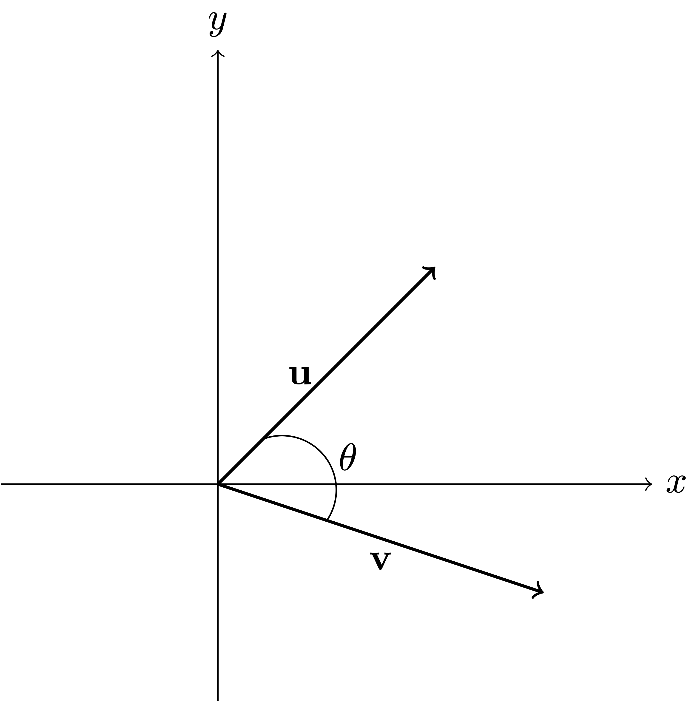
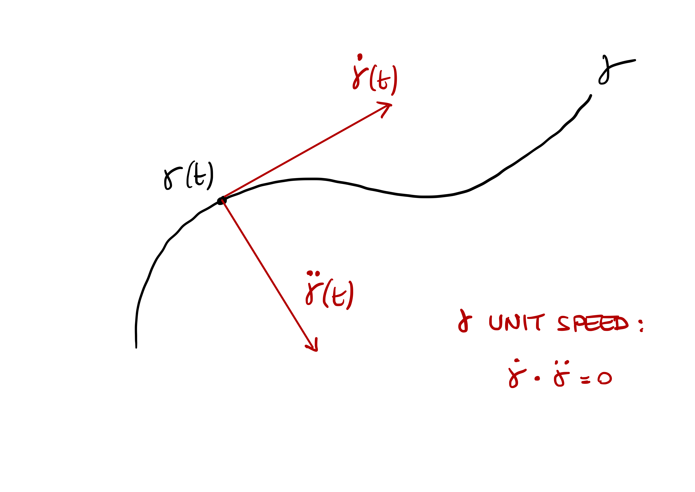
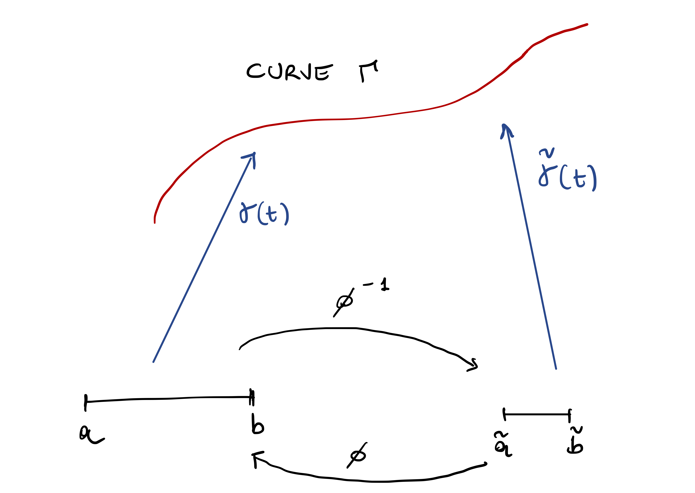
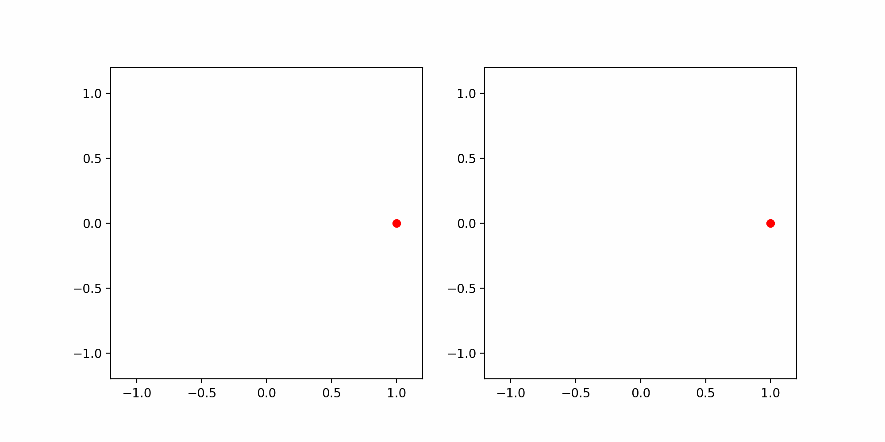
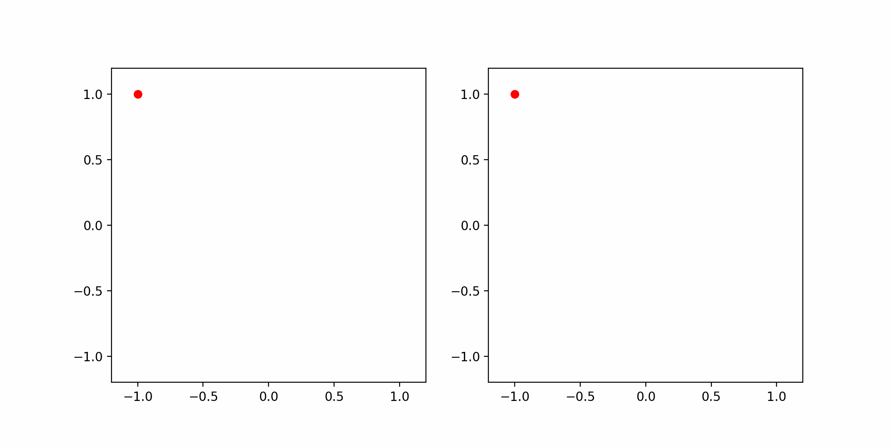
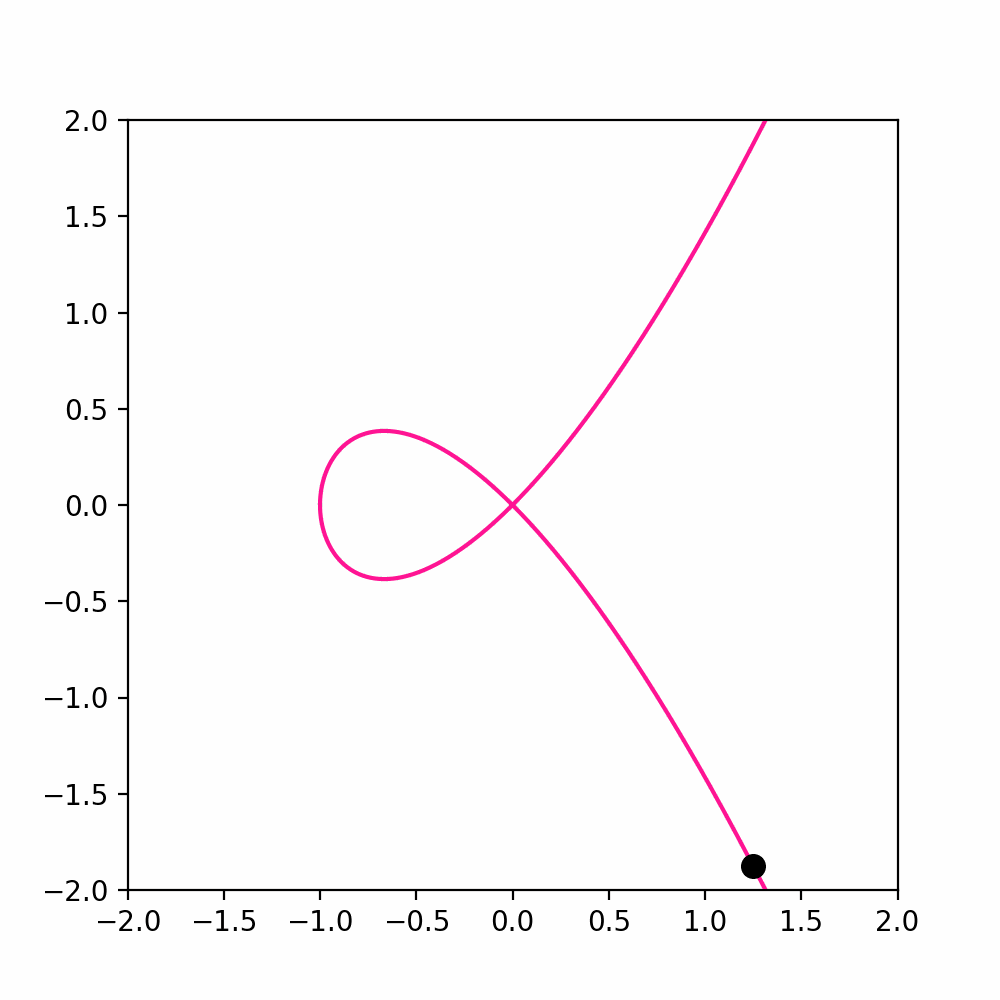
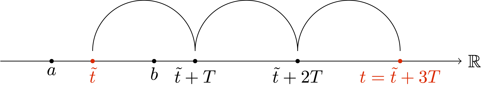
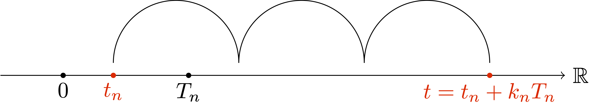
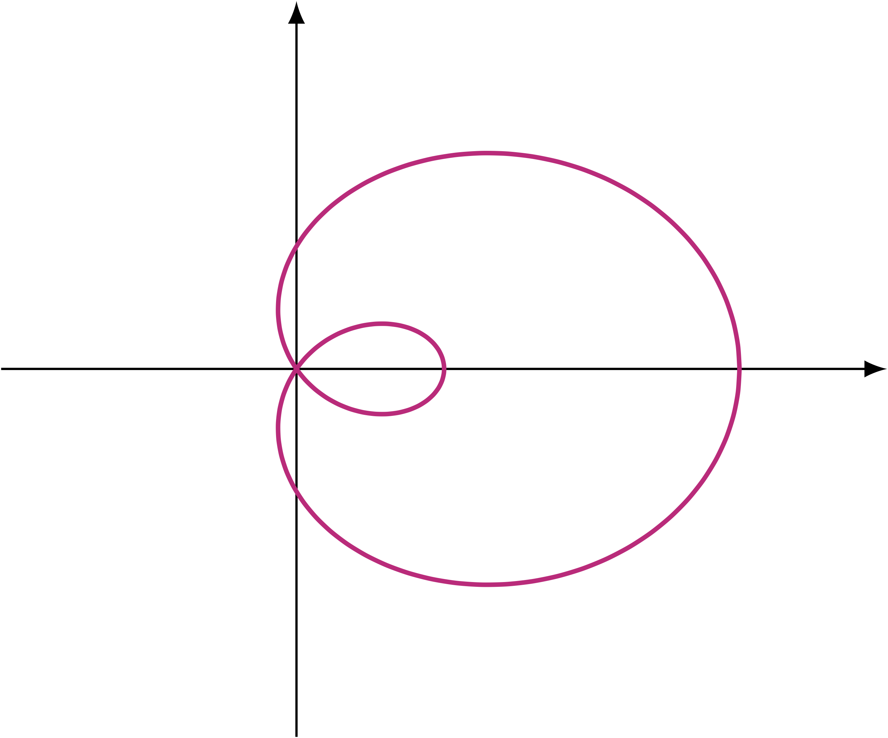

3 Parametrized curves
Let us recall the definition of parametrized curve.
Definition 1: Parametrized curve
A parametrized curve in \(\R^n\) is a function \[
\g \ \colon (a,b) \to \R^n \,.
\] where
\[ (a,b) = \{ t \in \R \ \colon \ a < t < b \} \,, \] with \[ - \infty \leq a < b \leq \infty \,. \] The components of \(\g(t) \in \R^n\) are denoted by \[ \g(t) = ( \gamma_1(t), \ldots, \gamma_n(t) ) \,, \] where the components are functions \[ \gamma_i \ \colon (a,b) \to \R \,, \] for all \(i = 1, \ldots, n\).
As we already mentioned, the aim of the course is to study curves by differentiating them. Let us see what that means for curves.
Definition 2: Smooth functions
A scalar function \(f \ \colon (a,b) \to \R\) is called smooth if the derivative \[
\frac{d^n f}{dt^n}
\] exists for all \(n \geq 1\) and \(t \in (a,b)\).
We will denote the first and second derivatives of \(f\) as follows: \[ \dot f := \frac{d f}{dt} \,, \quad \ddot f := \frac{d^2 f}{dt^2} \,. \]
Example 3
The function \(f(x)=x^4\) is smooth, with \[\begin{align}
& \frac{d f}{dt} = 4x^3 ,\,\, \frac{d^2 f}{dt^2} = 12 x^2 \,, \\
& \frac{d^3 f}{dt^3} = 24 x ,\,\, \frac{d^4 f}{dt^4} = 24 \,, \\
& \frac{d^n f}{dt^n} = 0 \, \text{ for all } \, n \geq 5 \,.
\end{align}\] Other examples smooth functions are polynomials, as well as \[
f(t) = \cos(t) , \,\, f(t) = \sin(t) \,, \,\, f(t) = e^t \,.
\]
Definition 4
Let \(\g \ \colon (a,b) \to \R^n\) with \[
\g(t) = ( \g_1(t), \ldots, \g_n(t) )
\] be a parametrized curve. We say that \(\g\) is smooth if the components \[
\g_i \ \colon (a,b) \to \R
\] are smooth for all \(i=1,\ldots,n\). The derivatives of \(\g\) are \[
\frac{d^k\g}{dt^k} := \left( \frac{d^k\gamma_1}{dt^k} , \ldots, \frac{d^k\gamma_n}{dt^k} \right)
\] for all \(k \in \N\). As a shorthand, we will denote the first derivative of \(\g\) as \[
\dot \g := \frac{d\g}{dt} = \left( \frac{d\gamma_1}{dt} , \ldots, \frac{d\gamma_n}{dt} \right)
\] and the second by \[
\ddot \g := \frac{d^2\g}{dt^2} = \left( \frac{d^2\gamma_1}{dt^2} , \ldots, \frac{d^2\gamma_n}{dt^2} \right) \,.
\]
In Figure 3.1 we skectch a smooth and a non-smooth curve. Notice that the curve on the right is smooth, except for the point \(x\).

We will work under the following assumption.
Assumption
All the parametrized curves in this lecture notes are assumed to be smooth.
Example 5
The circle \[
\g (t) = (\cos(t),\sin(t))
\] is a smooth parametrized curve, since both \(\cos(t)\) and \(\sin(t)\) are smooth functions. We have \[
\dot \g = (-\sin(t),\cos(t)) \,.
\] For example the derivative of \(\g\) at the point \((0,1)\) is given by \[
\dot \g( \pi/2) = (-\sin(\pi/2),\cos(\pi/2)) = (-1,0) \,.
\] The plot of the circle and the derivative vector at \((-1,0)\) can be seen in Figure 3.2.
3.1 Tangent vectors
Looking at Figure 3.2, it seems like the vector \[ \dot \g(\pi/2) = (-1,0) \] is tangent to the circle at the point \[ \g(\pi/2) = (0,1) \,. \] Is this a coincidence? Not that all. Let us look at the definition of derivative at a point: \[ \dot \g (t) := \lim_{\delta \to 0} \frac{\g(t + \delta) - \g(t)}{\delta} \,. \] If we just look at the quantity \[ \frac{\g(t + \delta) - \g(t)}{\delta} \] for non-negative \(\delta\), we see that this vector is parallel to the chord joining \(\g(t)\) to \(\g(t + \delta)\), as shown in Figure 3.3 below. As \(\delta \to 0\), the length of the chord tends to zero. However the direction of the chord becomes parallel to that of the tangent vector of the curve \(\g\) at \(\g(t)\). Since \[ \frac{\g(t + \delta) - \g(t)}{\delta} \to \dot \g(t) \] as \(\delta \to 0\), we see that \(\dot \g (t)\) is parallel to the tangent of \(\g\) at \(\g(t)\), as showin in Figure 3.3.

The above remark motivates the following definition.
Definition 6: Tangent vector
Let \(\g \ \colon (a,b) \to \R^n\) be a parametrized curve. The tangent vector to \(\g\) at the point \(\g(t)\) is defined as \[
\tau:= \dot \g(t) \,.
\]
Example 7: Tangent vector to helix
The helix is described by the parametric curve \[
\g \ \colon \R \to \R^3
\] with \[
\g_1(t) = \cos (t)\, , \,\,
\g_2(t) = \sin (t)\, , \,\,
\g_3(t) = t .
\] This is plotted in Figure 3.4 below. The tangent vector at point \(\g(t)\) is given by \[
\dot \g (t) = ( -\sin(t), \cos(t) , 1) \,.
\] For example in Figure 3.4 we plot the tangent vector at time \(t = \pi/2\), that is, \[
\dot\g(\pi/2) = (-1,0,\pi/2) \,.
\] The above looks very similar to the tangent vector to the circle. Except that there is a \(z\) component, and that component is constant and equal to \(1\). Intuitively this means that the helix is lifting from the plane \(xy\) with constant speed with respect to the \(z\)-axis. We will soon give a name to this concept.

Remark 8: Avoiding potential ambiguities
Sometimes it will happen that a curve self intersects, meaning that there are two time instants \(t_1\) and \(t_2\) and a point \(p \in \R^n\) such that \[
p = \g(t_1) = \g(t_2)\,.
\] In this case there is ambiguity in talking about the tangent vector at the point \(p\): in principle there are two tangent vectors \(\dot\g(t_1)\) and \(\dot\g(t_2)\), and it could happen that \[
\dot\g(t_1) \neq \dot\g(t_1)\,.
\] Thus the concept of tangent at \(p\) is not well-defined. We need then to be more precise and talk about tangent at a certain time-step \(t\), rather than at some point \(p\). We however do not amend Definition 6, but you should keep this potential ambiguity in mind.
Example 9: The Lemniscate, a self intersecting curve
For example consider \(\g \ \colon [0,2\pi] \to \R^2\) defined as \[
\g_1(t) = \sin (t)\, , \,\,
\g_2(t) = \sin (t) \cos(t) \, .
\] Such curve is called Lemniscate, see Wikipedia page, and is plotted in Figure 3.5 below. The orgin \((0,0)\) is a point of self-intersection, meaning that \[
\g (0) = \g (\pi) = (0,0) \,.
\] The tangent vector at point \(\g(t)\) is given by \[
\dot \g(t) = (\cos(t), \cos^2(t) - \sin^2(t) )
\] and therefore we have two tangents at \((0,0)\), that is, \[
\tau_1 = \dot\g(0) = (1,1) \,, \,\,
\tau_2 = \dot\g(\pi) = (-1,1) \,.
\]

3.2 Length of curves
For a vector \(v \in \R^n\) with components \[ v=(v_1,\ldots,v_n), \] its length is defined by \[ \norm{v}:= \sqrt{\sum_{i=1}^n v_i^2 } \,. \] The above is just an extension of the Pythagoras theorem to \(\R^n\), and the length of \(v\) is computed from the origin.

If we have a second vector \(u \in \R^n\), then the quantity \[ \norm{u-v}:= \sqrt{\sum_{i=1}^n (u_i-v_i)^2 } \] measures the length of the difference between \(u\) and \(v\).

We would like to define the concept of length of a curve. Intuitively, one could proceed by approximation as in the figure below.

In formulae, this means choosing some time instants \[ t_0, \ldots, t_m \in (a,b) \,. \] The length of the segment connecting \(\g(t_{i-1})\) to \(\g(t_i)\) is given by \[ \norm{ \g(t_i) - \g(t_{i-1}) } \,. \] Thus \[ L(\g) \approx \sum_{i=1}^m \norm{ \g(t_i) - \g(t_{i-1}) } \,. \tag{3.1}\] Intuitively, if we increase the number of points \(t_i\), the quantity on the RHS of (3.1) should approximate \(L(\g)\) better and better. Let us make this precise.
Definition 10: Partition
Let \((a,b)\) be an interval. A partition \(\mathcal{P}\) of \([a,b]\) is a vector of time instants \[
\mathcal{P} = (t_0,\ldots, t_k) \in [a,b]^{m+1}
\] with \[
t_0 = a < t_1 < \ldots < t_{m-1} < t_m = b \,.
\] If \(\mathcal{P}\) is a partition of \([a,b]\), we define its maximum length as \[
\norm{\mathcal{P}} := \max_{1 \leq i \leq m} |t_{i} - t_{i-1}| \,.
\]
Note that \(\norm{\mathcal{P}}\) measures how fine the partition \(\mathcal{P}\) is.
Definition 11: Length of approximating polygonal curve
Suppose \(\g \colon (a,b) \to \R^n\) is a parametrized curve and \(\mathcal{P}\) a partition of \([a,b]\). We define the length of the polygonal curve connecting the points \[
\g(t_0)\,, \,\, \g(t_1) \,, \,\, \ldots, \,\, \g(t_m)
\] as \[
L(\g, \mathcal{P}) := \sum_{i=1}^m \norm{ \g(t_i) - \g(t_{i-1}) } \,.
\]
If \(\norm{\mathcal{P}}\) becomes smaller and smaller, that is, the partition \(\mathcal{P}\) is finer and finer, it is reasonable to say that \[ L(\g, \mathcal{P}) \] is approximating the length of \(\g\). We take this as definition of length.
Definition 12: Rectifiable curve and length
Suppose \(\g \colon (a,b) \to \R^n\) is a parametrized curve. We say that \(\g\) is rectifiable if the limit \[
L(\g) = \lim_{ \norm{P} \to 0} \ L(\g,\mathcal{P})
\] exists finite. In such case we call \(L(\g)\) the length of \(\g\).
This definition definitely corresponds to our geometrical intuition of length of a curve.
Question 13
How do we use such definition in practice to compute the length of a given curve \(\g\)?
Thankfully, when \(\g\) is smooth, the length \(L(\g)\) can be characterized in terms of \(\dot\g\). Indeed, when \(\delta\) is small, then the quantity \[ \norm{\g(t + \delta) - \g(t)} \] is approximating the length of \(\g\) between \(\g(t)\) and \(\g(t + \delta)\). Multiplying and dividing by \(\delta\) we obtain \[ \frac{\norm{\g(t + \delta) - \g(t)}}{\delta} \, \delta \] which for small \(\delta\) is close to \[ \norm{\dot\g(t)} \,\delta \,. \] We can now divide the time interval \((a,b)\) in steps \(t_0, \ldots, t_m\) with \(|t_{i}-t_{i-1}| < \delta\) and obtain \[\begin{align} \norm{\g(t_{i}) - \g(t_{i-1}) } & = \frac{\norm{\g(t_{i}) - \g(t_{i-1})}}{ |t_{i}-t_{i-1}| } |t_{i}-t_{i-1}| \\ & \approx \norm{ \dot\g(t_i)} \delta \end{align}\] since \(\delta\) is small. Therefore \[ L(\g) \approx \sum_{i=1}^m \norm{\g(t_{i}) - \g(t_{i-1})} \approx \sum_{i=1}^m \norm{\dot\g(t_i)} \,\delta \,. \] The RHS is a Riemann sum, therefore \[ L(\g) \approx \int_a^b \norm{\dot\g(t)} \, dt \,. \]
The above argument can be made rigorous, as we see in the next theorem.

Theorem 14: Characterizing the length of \(\g\)
Assume \(\g \ \colon [a,b] \to \R^n\) is a parametrized curve, with \([a,b]\) bounded. Then \(\g\) is rectifiable and \[
L(\g) = \int_a^b \norm{\dot\g(t)} \, dt \,.
\tag{3.2}\]
Proof
Step 1. The integral in (3.2) is bounded.
Since \(\g\) is smooth, in particular \(\dot \g\) is continuous. Since \([a,b]\) is bounded, then \(\dot \g\) is bounded, that is \[ \sup_{t \in [a,b]} \norm{\dot \g(t)} \leq C \] for some constant \(C \geq 0\). Therefore \[ \int_a^b \norm{\dot\g(t)} \, dt \leq C (b-a) < \infty \,. \]
Since \(\g\) is smooth, in particular \(\dot \g\) is continuous. Since \([a,b]\) is bounded, then \(\dot \g\) is bounded, that is \[ \sup_{t \in [a,b]} \norm{\dot \g(t)} \leq C \] for some constant \(C \geq 0\). Therefore \[ \int_a^b \norm{\dot\g(t)} \, dt \leq C (b-a) < \infty \,. \]
Step 2. Writing (3.2) as limit.
Recalling that \[
L(\g) = \lim_{\norm{\mathcal{P}} \to 0} \ L(\g,\mathcal{P}) \,,
\] whenever the limit is finite, in order to show (3.2) we then need to prove \[
L(\g,\mathcal{P}) \to \int_a^b \norm{\dot\g(t)} \, dt
\] as \(\norm{\mathcal{P}} \to 0\). Showing the above means proving that: for every \(\e > 0\) there exists a \(\delta > 0\) such that, if \(\mathcal{P}\) is a partition of \([a,b]\) such that \(\norm{ \mathcal{P} }<\delta\), then \[
\left| \int_a^b \norm{\dot\g(t)} \, dt - L(\g , \mathcal{P} ) \right| < \e \,.
\tag{3.3}\]
Step 3. First estimate in (3.3).
This first estimate is easy, and only relies on the Fundamental Theorem of Calculus. To be more precise, we will show that each polygonal has shorter length than \(\int_{a}^b \norm{ \dot\g (t)} \, dt\). To this end, take an arbitrary partition \(\mathcal{P} = (t_0, \ldots, t_m)\) of \([a,b]\). Then for each \(i = 1,\ldots,m\) we have \[
\norm{ \g(t_i) - \g (t_{i-1}) } = \norm{ \int_{t_{i-1}}^{t_i} \dot\g (t)\, dt } \leq \int_{t_{i-1}}^{t_i}\norm{ \dot\g (t)} \, dt
\] where we used the Fundamental Theorem of calculus, and usual integral properties. Therefore by definition \[\begin{align}
L(\g,\mathcal{P} ) & = \sum_{i=1}^m \norm{ \g(t_i) - \g (t_{i-1}) } \\
& \leq \sum_{i=1}^m \int_{t_{i-1}}^{t_i} \norm{ \dot\g (t)} \, dt \\
& = \int_{a}^b \norm{ \dot\g (t)} \, dt \,.
\end{align}\] We have then shown \[
L(\g, \mathcal{P}) \leq \int_{a}^b \norm{ \dot\g (t)} \, dt
\tag{3.4}\] for all partitions \(\mathcal{P}\).
Step 4. Second estimate in (3.3).
The second estimate is more delicate. We need to carefully construct a polygonal so that its length is close to \(\int_a^b \norm{ \dot \g} \,dt\). This will be possible by uniform continuity of \(\dot\g\). Indeed, note that \(\dot \g\) is continuous on the compact set \([a,b]\). Therefore it is uniformly continuous by the Heine-Borel Theorem. Fix \(\e>0\). By uniform continuity of \(\dot \g\) there exists \(\delta >0\) such that \[
|t-s| < \delta \implies \norm{ \dot\g(t)-\dot\g(s) } < \frac{ \e }{b-a} \,.
\tag{3.5}\] for all \(t,s \in [a,b]\). Let \(\mathcal{P} = (t_0, \ldots, t_m)\) be a partition of \([a,b]\) with \(\norm{\mathcal{P}} < \delta\). Recall that \[
\norm{\mathcal{P}} = \max_{i=1,\ldots ,m} |t_i - t_{i-1}| \,.
\] Therefore the condition \(\norm{\mathcal{P}} < \delta\) implies \[
|t_i - t_{i-1}| < \delta
\tag{3.6}\] for each \(i = 1, \ldots, m\). For all \(i = 1, \ldots, m\) and \(s \in [t_{i-1},t_i]\) we have \[\begin{align}
\g(t_i) - \g(t_{i-1}) & = \int_{t_{i-1}}^{ t_i } \dot\g(t)\, dt \\
& = \int_{t_{i-1}}^{ t_i } \dot\g(s) + (\dot\g(t) - \dot\g(s)) \, dt \\
& = ( t_i - t_{i-1} ) \dot\g(s) + \int_{t_{i-1}}^{ t_i } (\dot\g(t) - \dot\g(s)) \, dt
\end{align}\] Therefore \[
\norm{ \g(t_i) - \g(t_{i-1}) } = \norm{ ( t_i - t_{i-1} ) \dot\g(s) +
\int_{t_{i-1}}^{ t_i } (\dot\g(t) - \dot\g(s)) \, dt }
\tag{3.7}\] We can now use the reverse triangle inequality \[
| \| x\| - \norm{y}| \leq \norm{x-y}\,,
\] for all \(x,y \in \R^n\), which implies \[
\norm{x+y} = \norm{x - (-y)} \geq \| x \| - \norm{y}
\] for all \(x,y \in \R^n\). Applying the above to (3.7) we get \[
\norm{ \g(t_i) - \g(t_{i-1}) } \geq
( t_i - t_{i-1} ) \norm{\dot\g(s)} -
\norm{ \int_{t_{i-1}}^{ t_i } (\dot\g(t) - \dot\g(s)) \, dt }
\tag{3.8}\] By standard properties of integral we also have \[
\norm{ \int_{t_{i-1}}^{ t_i } (\dot\g(t) - \dot\g(s)) \, dt }
\leq
\int_{t_{i-1}}^{ t_i } \norm{\dot\g(t) - \dot\g(s)} \, dt\,,
\] so that (3.8) implies \[
\norm{ \g(t_i) - \g(t_{i-1}) } \geq ( t_i - t_{i-1} ) \norm{\dot\g(s)} - \int_{t_{i-1}}^{ t_i } \norm{\dot\g(t) - \dot\g(s)} \, dt\,.
\tag{3.9}\] Since \(t,s \in [t_{i-1},t_i]\), then \[
|t-s| \leq | t_{i} - t_{i-1} | < \delta
\] where the last inequality follows by (3.6). Thus by uniform continuity (3.5) we get \[
\norm{ \dot\g(t) - \dot\g(s) } < \frac{\e}{b-a} \,.
\] We can therefore further estimate (3.9) and obtain \[\begin{align}
\norm{ \g(t_i) - \g(t_{i-1}) } & \geq ( t_i - t_{i-1} ) \norm{\dot\g(s)} - \int_{t_{i-1}}^{ t_i } \norm{\dot\g(t) - \dot\g(s)} \, dt \\
& \geq ( t_i - t_{i-1} ) \norm{\dot\g(s)} - ( t_i - t_{i-1} ) \frac{\e}{b-a} \, dt \,.
\end{align}\] Dividing the above by \(t_i - t_{i-1}\) we get \[
\frac{ \norm{ \g(t_i) - \g(t_{i-1}) } }{ t_i - t_{i-1} } \geq
\norm{\dot\g(s)} - \frac{\e}{b-a} \,.
\] Integrating the above over \(s\) in the interval \([t_{i-1}, t_i ]\) we get \[
\norm{ \g(t_i) - \g(t_{i-1}) } \geq \int_{t_{i-1}}^{ t_i } \norm{\dot\g(s)} \, ds - \frac{\e}{b-a} (t_i - t_{i-1}) \,.
\] Summing over \(i=1,\ldots,m\) we get \[
L(\mathcal{P},\g) \geq \int_{a}^b \norm{\dot\g(s)} \, ds - \e
\tag{3.10}\] since \[
\sum_{i=1}^m (t_i - t_{i-1}) = t_m - t_0 = b - a \,.
\]
Conclusion.
Putting together (3.4) and (3.10) we get \[
\int_{a}^b \norm{\dot\g(s)} \, ds - \e \leq L(\mathcal{P},\g)
\leq \int_{a}^b \norm{\dot\g(s)} \, ds
\] which implies (3.3), concluding the proof.
Thanks to the above theorem we have now a way to compute \(L(\g)\). Let us check that we have given a meaningful definition of length by computing \(L(\g)\) on known examples.
Example 15: Length of Circle
The circle of radius \(R\) is parametrized by \(\g \ \colon [0,2\pi] \to \R^2\) defined by \[
\g(t) = (R\cos(t), R\sin(t)) \,.
\] Then \[
\dot \g(t) = (-R\sin(t), R\cos(t))
\] and \[\begin{align}
\norm{\dot\g(t)} & = \sqrt{ \dot \g_1^2(t) + \dot \g_2^2(t) } \\
& = R \sqrt{ \sin^2(t) + \cos^2 (t)} = R\,.
\end{align}\] Therefore \[
L(\g) = \int_{0}^{2\pi} \norm{ \dot\g(t)} \, dt = \int_0^{2\pi} R \, dt = 2 \pi R
\] as expected.
Example 16: Length of helix
Let us consider one full turn of the Helix of radius \(R\) and rise \(H\). This is parametrized by \[
\g(t) = (R\cos(t), R\sin(t) ,Ht)
\] for \(t \in [0,2\pi]\). Then \[
\dot \g(t) = (-R\sin(t), R\cos(t) , H) \,,
\] and \[\begin{align}
\norm{ \dot \g(t) } & = \sqrt{ \dot\g_1^2 + \dot\g_2^2 + \dot\g_3^2 } \\
& = \sqrt{ R^2\sin^2(t) + R^2\cos^2(t) + H^2 } = \sqrt{R^2 + H^2} \,.
\end{align}\] Therefore \[
L(\g) = \int_0^{2\pi} \norm{ \dot\g(t) } \, dt = 2 \pi \sqrt{R^2 + H^2} \,.
\]
3.3 Arc-length
We have just shown in Theorem 14 that the length of a regular curve \(\g \ \colon [a,b] \to \R^n\) with \([a,b]\) bounded is given by \[ L(\g) = \int_a^b \norm{ \dot\g (t)} \,dt \,. \] Using this formula, we introduce the notion of length of a portion of \(\g\).
Definition 17: Arc-length
Let \(\g \, \colon (a,b) \to \R^n\) be a curve, with \((a,b)\) possibly unbounded. We define the arc-length of \(\g\) starting at the point \(\g(t_0)\) as the function \(s \colon \R \to \R\) defined by \[
s(t) := \int_{t_0}^t \norm{ \dot\g(\tau) }\, d\tau \,.
\]

Remark 18
A few remarks:
Arc-length is well-defined
Indeed, \(\g\) is smooth, and so \(\dot \g\) is continuous. WLOG assume \(t \geq t_0\). Then \[ s(t) = \int_{t_0}^t \norm{ \dot\g(\tau) }\, d\tau \leq (t-t_0) \max_{ \tau \in [t_0,t] } \norm{\dot\g(\tau)} < \infty \,. \]
We always have \[ s(t_0)=0\,. \]
We have \[ t > t_0 \implies s(t) \geq 0 \] and \[ t < t_0 \implies s(t) \leq 0 \,. \]
Choosing a different starting point changes the arc-length by a constant:
For example define \(\tilde{s}\) as the arc-length starting from \(\tilde{t}_0\) \[ \tilde{s}(t) := \int_{\tilde{t}_0}^t \norm{ \dot\g(\tau) } \, d\tau \,. \] Then by the properties of integral \[\begin{align} s(t) & = \int_{t_0}^t \norm{ \dot\g(\tau) } \, d\tau \\ & = \int_{t_0}^{\tilde{t}_0} \norm{ \dot\g(\tau) } \, d\tau + \int_{\tilde{t}_0}^{t} \norm{ \dot\g(\tau) } \, d\tau \\ & = \int_{t_0}^{\tilde{t}_0} \norm{ \dot\g(\tau) } \, d\tau + \tilde{s}(t) \,. \end{align}\] Hence \[ s = c + \tilde{s} \] with \[ c := \int_{t_0}^{\tilde{t}_0} \norm{ \dot\g(\tau) } \, d\tau \,. \] Note that \(c\) is the arc-length of \(\g\) between the starting points \(\g(t_0)\) and \(\g(\tilde{t}_0)\).
The arc-length is a differentiable function, with \[ \dot s(t) = \frac{d}{dt} \int_{t_0}^t \norm{\dot\g (\tau)} \, d\tau = \norm{\dot\g (t)} \,. \]
Since \(\dot\g\) is continuous, the above follows by the Fundamental Theorem of Calculus.
Example 19: Circle
The circle of radius \(R\) is parametrized by \(\g \ \colon [0,2\pi] \to \R^2\) defined by \[
\g(t) = (R\cos(t), R\sin(t)) \,.
\] Then \[
\dot \g(t) = (-R\sin(t), R\cos(t)) \,, \quad \norm{\dot\g(t)} = R \,.
\] Therefore, for any fixed \(t_0 \in [0,2\pi]\) we have \[
s(t) = \int_{t_0}^{t} \norm{ \dot\g(\tau)} \, d\tau = \int_{t_0}^{t} R \, d\tau = (t - t_0) R \,.
\] In particular we see that \(\dot s = R\) is constant.
Example 20: Logarithmic spiral
The Logarithmic spiral is defined by \(\g \ \colon [0,2\pi] \to \R^2\) with \[
\g(t) = (e^{kt} \cos(t), e^{kt} \sin(t)) \,,
\] where \(k \in \R\), \(k \neq 0\), is called the growth factor. Then \[
\dot \g_1(t) = e^{kt} ( k \cos(t) - \sin(t) )
\] \[
\dot \g_2(t) = e^{kt} ( k \sin(t) + \cos(t) )
\] and so, after some calculations, \[
\norm{\dot\g(t)}^2 = \dot\g_1^2 + \dot\g_2^2 = (k^2 + 1) e^{2kt} \,.
\] The arc-length starting from \(t_0\) is \[\begin{align}
s(t) & = \int_{t_0}^t \norm{\dot\g(\tau)} \, d \tau \\
& = \sqrt{k^2 + 1} \int_{t_0}^t e^{k \tau} \, d \tau \\
& = \frac{\sqrt{k^2 + 1}}{k} ( e^{kt} - e^{k t_0} ) \,.
\end{align}\]

3.4 Scalar product in \(\R^n\)
Let us start by defining the scalar product in \(\R^2\).
Definition 21: Scalar product in \(\R^2\)
Let \(u, v \in \R^2\) and denote by \(\theta \in [0,\pi]\) the angle formed by \(u\) and \(v\). The scalar product between \(u\) and \(v\) is defined by \[
u \cdot v := |u| |v| \cos(\theta) \,.
\]

Remark 22
The scalar product is maximized for \(\theta = 0\), for which we have \[
u \cdot v = |u| |v| \cos(\theta) = |u| |v| \,.
\] It is instead minimized for \(\theta = \pi\), for which \[
u \cdot v = |u| |v| \cos(\theta) = -|u| |v| \,.
\]
Definition 23: Orthogonal vectors
Let \(u, v \in \R^2\). If \[
u \cdot v = 0
\] we say that \(u\) and \(v\) are orthogonal.
Proposition 24: Bilinearity and symmetry of scalar product
Let \(u, v, w \in \R^2\) and \(\lambda \in \R\). Then
- Symmetry: \(u \cdot v = v \cdot u\)
- Bilinearity: It holds \[ \lambda (u \cdot v) = (\lambda u) \cdot v = u \cdot (\lambda v) \,, \] \[ u \cdot (v + w) = u \cdot v + u \cdot w \,. \]
We leave the proof to the reader. The above proposition is saying that the scalar product is bilinear and symmetric.
Proposition 25: Scalar products written wrt euclidean coordinates
Denote by \[
e_1 = (1,0) \,, \quad e_2 = (0,1)
\] the euclidean basis of \(\R^2\). Let \(u,v \in \R^2\) and denote by \[
u = (u_1,u_2) = u_1 e_1 + u_2 e_2
\] \[
v = (v_1,v_2) = v_1 e_1 + v_2 e_2
\] their coordinates with respect to \(e_1,e_2\). Then \[
u \cdot v = u_1v_2 + u_2 v_2 \,.
\]
Proof
Note that \[
e_1 \cdot e_1 = 1 \,, \quad e_2 \cdot e_2 = 1 \,, \quad
e_1 \cdot e_2 = e_2 \cdot e_1 = 0 \,.
\] Using the bilinearity of scalar product we have \[\begin{align}
u \cdot v & = (u_1 e_1 + u_2 e_2) \cdot (v_1 e_1 + v_2 e_2) \\
& = u_1 v_1 e_1 \cdot e_1 + u_1 v_2 e_1 \cdot e_2 +
u_2 v_1 e_2 \cdot e_1 + u_2 v_2 e_2 \cdot e_2 \\
& = u_1 v_1 + u_2 v_2 \,.
\end{align}\]
The above proposition provides a way to generalize of the scalar product to \(\R^n\)..
Definition 26: Scalar product in \(\R^n\)
Let \(u,v \in \R^n\) and denote their coordinates by \[
u = (u_1, \ldots, u_n) \,, \quad
u = (v_1, \ldots, v_n) \,.
\] We define the scalar product between \(u\) and \(v\) by \[
u \cdot v := \sum_{i=1}^n u_i v_i \,.
\]
With the above definition we still have that the scalar product is bilinear and symmetric, as detailed in the following proposition:
Proposition 27: Bilinearity and symmetry of scalar product in \(\R^n\)
Let \(u, v, w \in \R^n\) and \(\lambda \in \R\). Then
- Symmetry: \(u \cdot v = v \cdot u\)
- Bilinearity: It holds \[ \lambda (u \cdot v) = (\lambda u) \cdot v = u \cdot (\lambda v) \,, \] \[ u \cdot (v + w) = u \cdot v + u \cdot w \,. \]
The proof of the above proposition is an easy check, and is left to the reader for exercise.
Definition 28
Let \(u,v \in \R^n\). We say that \(u\) and \(v\) are orthogonal if \[
u \cdot v = 0 \,.
\]
Proposition 29: Differentiating scalar product
Let \(\g , \eeta \ \colon (a,b) \to \R^n\) be parametrized curves. Then the scalar map \[
\g \cdot \eeta \ \colon (a,b) \to \R
\] is smooth, and \[
\frac{d}{dt} (\g \cdot \eeta) = \dot\g \cdot \eeta + \g \cdot \dot \eeta
\] for all \(t \in (a,b)\).
Proof
Denote by \[
\g = (\g_1 ,\ldots , \g_n) \,, \quad \eeta = (\eta_1, \ldots , \eta_n)
\] the coordinates of \(\g\) and \(\eeta\). Clearly the map \[
t \mapsto \g \cdot \eeta = \sum_{i=1}^n \g_i \eta_i
\] is smooth, being sum and product of smooth functions.
Concerning the formula, by definition of scalar product and linearity of the derivative we have \[\begin{align} \frac{d}{dt} (\g \cdot \eeta) & = \frac{d}{dt} \left( \sum_{i=1}^n \g_i \eta_i \right) \\ & = \sum_{i=1}^n \frac{d}{dt} ( \g_i \eta_i ) \\ & = \sum_{i=1}^n \dot\g_i \eta_i + \g_i \dot\eta_i \\ & = \dot\g \cdot \eeta + \g \cdot \dot\eeta \,, \end{align}\] where in the second to last equality we used the product rule of differentiation.
Concerning the formula, by definition of scalar product and linearity of the derivative we have \[\begin{align} \frac{d}{dt} (\g \cdot \eeta) & = \frac{d}{dt} \left( \sum_{i=1}^n \g_i \eta_i \right) \\ & = \sum_{i=1}^n \frac{d}{dt} ( \g_i \eta_i ) \\ & = \sum_{i=1}^n \dot\g_i \eta_i + \g_i \dot\eta_i \\ & = \dot\g \cdot \eeta + \g \cdot \dot\eeta \,, \end{align}\] where in the second to last equality we used the product rule of differentiation.
3.5 Speed of a curve
Given a curve \(\g\) we defined the tangent vector at \(\g(t)\) to be \[ \dot \g (t) \,. \] The tangent vector measures the change of direction of the curve. Therefore the magnitude of \(\dot \g\) can be interpreted as the speed of the curve.
Definition 30
Let \(\g \ \colon (a,b) \to \R^n\) be a curve. We define the speed of \(\g\) at the point \(\g(t)\) by \[
\norm{\dot \g (t)} \,.
\] We say that \(\g\) is a unit-speed curve if \[
\norm{\dot \g (t)} = 1 \,, \quad \forall \, t \in (a,b) \,.
\]
Remark 31
The derivative of the arc-length \(s\) gives the speed of \(\g\): \[
s(t) := \int_{t_0}^t \norm{ \dot\g (\tau) } \, d\tau \,\, \implies \,\,
\dot s(t) = \norm{ \dot\g (t) } \,.
\]
The reason why we introduce unit speed curves is because they make calculations easy. This is essentially because of the next proposition.
Proposition 32
Let \(\g \ \colon (a,b) \to \R^n\) be a unit speed curve. Then \[
\dot \g \cdot \ddot \g = 0
\] for all \(t \in (a,b)\).
Proof
Let us consider the identity \[
\dot \g(t) \cdot \dot \g(t) = \sum_{i=1}^n \dot\g_i^2(t) = \norm{\dot\g(t)}^2 \,.
\tag{3.11}\] Since \(\g\) is unit speed we have \[
\norm{\dot\g(t)}^2 = 1 \quad \forall \, t \in (a,b) \,.
\] and therefore \[
\frac{d}{dt} \left( \norm{\dot\g(t)}^2 \right) = 0 \quad \forall \, t \in (a,b) \,.
\tag{3.12}\] We can differentiate the LHS of (3.11) to get \[
\frac{d}{dt} (\dot \g \cdot \dot \g) = \ddot \g \cdot \dot \g
+ \dot \g \cdot \ddot \g = 2 \dot \g \cdot \ddot \g\,.
\tag{3.13}\] where we used Proposition 29 and symmetry of the scalar product. Differentiating (3.11) and using (3.12)-(3.13) we conclude \[
2 \dot \g \cdot \ddot \g = 0 \quad \forall \, t \in (a,b) \,.
\]
Remark 33
Proposition 32 is saying that if \(\g\) is unit speed, then its tangent vector \(\dot \g\) is always orthogonal to the second derivative \(\ddot \g\). This will be very useful in the future.

3.6 Reparametrization
As we have observed in the Examples of Chapter 1, there is in general no unique way to parametrize a curve. However we would like to understand when two parametrizations are related. In other words, we want to clarify the concept of equivalence of two parametrizations.
Definition 34: Diffeomorphism
Let \(\f \ \colon (a,b) \to (\tilde{a},\tilde{b})\). We say that \(\f\) is a diffeomorphism if the following conditions are satisfied:
- \(\f\) is invertible, with inverse \(\f^{-1} \ \colon (\tilde{a},\tilde{b}) \to (a,b)\). Thus \[ \f^{-1} \circ \f = \f \circ \f^{-1} = \id \,, \] where \(\id \colon \R \to \R\) is the identity map on \(\R\), that is, \[ \id(t) = t \,, \quad \forall \, t \in \R \,. \]
- \(\f\) is smooth,
- \(\f^{-1}\) is smooth.
Definition 35: Reparametrization
Let \(\g \ \colon (a,b) \to \R^n\) be a parametrized curve. A reparametrization of \(\g\) is another parametrized curve \(\tilde{\g} \ \colon (\tilde{a},\tilde{b}) \to \R^n\) such that \[
\tg (t) = \g (\f(t)) \quad \forall \, t \in (\tilde{a},\tilde{b})\,,
\tag{3.14}\] where \[
\f \colon (\tilde{a},\tilde{b}) \to (a,b)
\] is a diffeomerphism. We call both \(\f\) and \(\f^{-1}\) reparametrization maps.
Remark 36
A comment about the above definition. Given a parametrized curve \(\g\), this identifies a 1D shape \(\Gamma \subset \R^n\). A reparametrization \(\tg\) is just an equivalent way to describe \(\Gamma\). For \(\g\) and \(\tg\) to be reparametrizations of each other, there must exist a smooth rule \(\f\) to switch from one to another, according to formula (3.14)

Example 37: Change of orientation
The map \(\f \colon (\tilde{a},\tilde{b}) \to (a,b)\) defined by \[
\f (t) := - t
\] is a diffeomoprhism. The inverse of \(\f\) is given by \({\f}^{-1} \colon (a,b) \to (\tilde{a},\tilde{b})\) defined by \[
{\f}^{-1} (t) = - t \,.
\] Note that \(\f\) can be used to reverse the orientation of a curve.
Example 38: Reversing orientation of circle
Consider the unit circle parametrized as usual by \(\g \ \colon [0,2\pi] \to \R^2\) defined as \[
\g (t) := (\cos (t), \sin(t)) \,.
\] To reverse the orientation we can reparametrize \(\g\) by using the diffeomorphism \[
\f(t):= - t \,.
\] This way we obtain \(\tilde{\g}:= \g \circ \f \ \colon [0,2\pi] \to [0, 2\pi]\), \[\begin{align}
\tilde{\g}(t) & = \g (\f(t)) \\
& = (\cos(-t),\sin(-t)) \\
& = (\cos(t),-\sin(t)) \,,
\end{align}\] where in the last identity we used the properties of \(\cos\) and \(\sin\). Notice that in this way, for example, \[
\g(\pi/2) = (0,1) \,, \quad \g(\pi/2) = (0,-1) \,.
\]

Example 39: Change of speed
Let \(k > 0\). The map \(\f \colon (\tilde{a},\tilde{b}) \to (a,b)\) defined by \[ \f (t) := kt \] is a diffeomoprhism. The inverse of \(\f\) is given by \({\f}^{-1} \colon (a,b) \to (\tilde{a},\tilde{b})\) defined by \[ {\f}^{-1} (t) = \frac{t}{k} \,. \] Note that \(\f\) can be used to change the speed of a curve:
- If \(k > 1\) the speed increases ,
- If \(0 < k < 1\) the speed decreases.
Example 40: Doubling the speed of Lemniscate
Recall the Lemniscate \[ \g (t): = (\sin(t), \sin(t)\cos(t) ) \,, \quad t \in [0,2\pi] \,. \] We can double the speed of the Lemniscate by using the Using the diffeomorphism \[ \f(t):=2t \,. \] This way we obtain \(\tilde{\g}:= \g \circ \f \ \colon [0,\pi] \to [0, 2\pi]\) with \[ \tg (t) = \g (\f(t)) = (\sin(2t), \sin(2t)\cos(2t)) \,. \] In this case we have that \[ \dot{\tg}(t) = 2 \dot \g(\f(t)) \,. \]
The above follows by chain rule. Indeed, \(\dot\f = 2\), so that \[ \dot{\tg} = \frac{d}{dt} \left( \g(\f(t)) \right) = \dot\f(t) \dot\g (\f(t)) = 2 \dot\g (\f(t))\,. \]

Important
The main reason we are interested in reparametrizations is because we want to parametrize curves by arc-lenght: This means that, for a curve \(\g\), we want to find a reparametrization \(\tg\) such that \(\tg\) is unit speed: \[
\norm{ \dot{\tg} } = 1 \,, \quad \forall t \in (a,b) \,.
\] We will see that this is not always possible.
Definition 41: Regular points
Let \(\g \ \colon (a,b) \to \R^n\) be a parametrized curve. We say that:
- \(\g(t_0)\) is a regular point if \[ \dot\g(t_0) \neq 0 \,. \]
- A point \(\g(t_0)\) is singular if it is not regular.
- The curve \(\g\) is regular if every point of \(\g\) is regular, that is, \[ \dot\g(t) \neq 0 \,, \quad \forall \, t \in (a,b) \,. \]
Note that when \(\dot\g(t_0) = 0\), this means the curve is stopping at time \(t_0\). Before making an example, let us prove a useful lemma about diffeomorphisms.
Lemma 42
Let \(\f \ \colon (a,b) \to (\tilde{a},\tilde{b})\) be a diffeomorphism. Then \[
\dot\f (t) \neq 0 \quad \forall \, t \in (a,b) \,.
\]
Proof
We know that \(\f\) is smooth with smooth inverse \[
\psi := \f^{-1} \ \colon (\tilde{a},\tilde{b}) \to (a,b) \,.
\] In particular it holds \[
\psi (\f(t)) = t \,, \quad \forall \, t \in (a,b) \,.
\] We can differentiate both sides of the above expression to get \[
\frac{d}{dt} \left( \psi (\f(t)) \right) = 1 \,.
\tag{3.15}\] We can differentiate the LHS by chain rule \[
\frac{d}{dt} \left( \psi (\f(t)) \right) = \dot\psi (\f(t)) \, \dot\f(t) \,.
\] From (3.15) we then get \[
\dot\psi (\f(t)) \, \dot\f(t) = 1 \, , \quad \forall \, t \in (a,b) \,.
\] Since on the LHS we have a product, this means that none of the LHS terms vanishes, so that \[
\dot\f(t) \neq 0 \, , \quad \forall \, t \in (a,b) \,.
\]
Example 43: A curve with one singular point
Consider the parabola \[ \Gamma := \{ (x,y) \in \R^2 \, \colon \, y=x^2 , \, -1 \leq x \leq 1\} \,. \] This can be parametrized in two ways by \(\g, \eeta \ \colon [-1,1] \to \R^2\) defined as \[ \g (t) = (t,t^2) \,, \quad \eeta(t) = (t^3, t^6) \,. \] We will see that the above parametrizations are not equivalent. This is intuitively clear, since the change of variables map should be \[ \f(t) = t^3 \,. \] This is smooth and invertible, with inverse \[ \f^{-1}(t) = \sqrt[3]{x} \,. \] However \(\f^{-1}\) is not smooth at \(t=0\), and thus \(\f\) is not a diffeomorphism. Alternatively we could have just noticed that \[ \dot \f (t) = 3t^2 \quad \implies \quad \dot\f(0) = 0 \,, \] and therefore \(\f\) cannot be a diffeomorphism due to Lemma 42.
Let us look at the derivatives: \[ \dot \g (t) = (1,2t) \,, \quad \dot \eeta (t)= (3t^2,6t^5) \,. \] We notice a difference:
- \(\g\) is a regular parametrization,
- \(\eeta(t)\) is regular only for \(t \neq 0\).
Indeed if we animate the plots of the above parametrizations, we see that:
- The point \(\g(t)\) moves with constant horizontal speed
- The point \(\eeta(t)\) is decelerating for \(t < 0\), it stops at \(t = 0\), and then accelerates again for \(t>0\).

Proposition 44: Regularity is invariant for reparametrization
Let \(\g \ \colon (a,b) \to \R^n\) be a parametrized curve and suppose that \(\g\) is regular, that is, \[
\dot\g(t) \neq 0 \,, \quad \forall \, t \in (a,b) \,.
\] Then every reparametrization of \(\g\) is also regular.
Proof
Let \(\tg \ \colon (\tilde{a},\tilde{b}) \to \R^n\) be a reparametrization of \(\g\). Then there exist \(\f \ \colon (\tilde{a},\tilde{b}) \to (a,b)\) diffeomorphism such that \[
\tilde \g (t) = \g (\f (t)) \,, \quad \forall \, t \in (\tilde{a},\tilde{b}) \,.
\] By the chain rule we have \[
\dot{\tg}(t) = \frac{d}{dt} \left( \g (\f(t)) \right) = \dot\g (\f(t)) \dot\f(t) \,.
\] Therefore \[
\dot{\tg}(t) \neq 0 \quad \iff \quad \dot\g (\f(t)) \dot\f(t) \neq 0 \,.
\tag{3.16}\] But we are assuming that \(\g\) is regular, so that \[
\dot\g (\f(t)) \neq 0 \,, \quad \forall\, t \in (\tilde{a},\tilde{b}) \,.
\] Thus (3.16) is equivalent to \[
\dot{\tg}(t) \neq 0 \quad \iff \quad \dot\f(t) \neq 0 \,.
\tag{3.17}\] Since \(\f\) is a diffeomorphism, by Lemma 42 we have that \[
\dot \f (t) \neq 0 \,, \quad \forall\, t \in (\tilde{a},\tilde{b}) \,.
\] By (3.17) we conclude that \[
\dot{\tg}(t) \neq 0 \, , \quad \forall \, t \in (\tilde{a},\tilde{b}) \,,
\] proving that \(\tg\) is regular.
Example 45
Let us go back to the parabola \[
\Gamma := \{ (x,y) \in \R^2 \, \colon \, y=x^2 , \, -1 \leq x \leq 1\} \,,
\] with the two parametrizations \(\g, \eeta \ \colon [-1,1] \to \R^2\) with \[
\g (t) = (t,t^2) \,, \quad
\eeta(t) = (t^3, t^6) \,.
\] We have that \[
\dot \g (t) = (1,2t) \,, \quad \dot \eeta (t)= (3t^2,6t^5) \,.
\] Therefore
- \(\g\) is a regular parametrization,
- \(\eeta(t)\) is regular only for \(t \neq 0\).
Proposition 44 implies that \(\eeta\) is NOT a reparametrization of \(\g\).
Definition 46: Unit speed reparametrization
Let \(\g\) be a parametrized curve. A unit speed reparametrization of \(\g\) is a reparametrization \(\tg\) such that \(\tg\) is unit speed.
The next theorem states that a curve is regular if and only if it has a unit speed reparametrization. For the proof, it is crucial to recall the definition of arc-length of a curve \(\g \colon (a,b) \to \R^n\), which is given by \[ s(t):=\int_{t_0}^t \norm{ \dot \g (\tau) } \, d\tau \,, \] for some arbitrary \(t_0 \in (a,b)\) fixed. Indeed, we will see that for \(\f\) regular the unit speed parametrization map can be taken as \[ \f = s^{-1} \,. \]
Theorem 47: Existence of unit speed reparametrization
Let \(\g\) be a parametrized curve. They are equivalent:
- \(\g\) is regular,
- \(\g\) has a unit speed reparametrization.
Proof
Step 1. Direct implication.
Assume \(\g \ \colon (a,b) \to \R^n\) is regular, that is, \[ \dot \g (t) \neq 0 \,, \quad \forall \, t \in (a,b)\,. \] Let \(s \ \colon (a,b) \to \R\) be the arc-length of \(\g\) starting at any point \(t_0 \in (a,b)\). By the Fundamental Theorem of Calculus we have \[ \dot s (t) = \norm{ \dot \g(t) } \tag{3.18}\] so that \[ \dot s (t) > 0 \,, \quad \forall \, t \in (a,b)\,. \] Since \(s\) is a scalar function, the above condition and the Inverse Function Theorem guarantee the existsence of a smooth inverse \[ s^{-1} \ \colon (\tilde{a},\tilde{b}) \to (a,b) \] for some \(\tilde{\alpha}< \tilde{\beta}\). Define the reparametrization map \(\f\) as \[ \f := s^{-1} \] and the corresponding reparametrization of \(\g\) given by the curve \[ \tg \ \colon (\tilde{a},\tilde{b}) \to \R^n \,, \quad \tg := \g \circ \f \,. \] We claim that \(\tg\) is unit speed. Indeed, by definition \[ \tg := \g \circ \f \quad \implies \quad \g = \tg \circ \f^{-1} = \tg \circ s \,, \] or in other words \[ \g(t) = \tg (s(t)) \,, \quad \forall t \in (a,b) \,. \] Differentiating the above expression and using the chain rule we get \[ \dot \g (t) = \dot{\tg}(s(t)) \, \dot s(t) = \dot{\tg}(s(t)) \, \norm{ \dot \g(t) } \] where in the last equality we used (3.18). Taking the absolute value of the above yileds \[ \norm{ \dot \g(t) } = \norm{\dot{\tg}(s(t))} \, \norm{ \dot \g(t) } \,. \tag{3.19}\] Since \(\g\) is regular, we have \[ \norm{\dot \g (t)} \neq 0 \,, \quad \forall \, t \in (a,b)\,. \] Therefore we can divide (3.19) by \(\norm{\dot\g(t)}\) and obtain \[ \norm{\dot{\tg}(s(t))} = 1 \,, \quad \forall \, t \in (a,b) \,. \] By invertibility of \(s\), the above holds if and only if \[ \norm{\dot{\tg}(t)} = 1 \,, \quad \forall \, t \in (\tilde{a},\tilde{b}) \,, \] showing that \(\tg\) is a unit speed reparametrization of \(\g\).
Assume \(\g \ \colon (a,b) \to \R^n\) is regular, that is, \[ \dot \g (t) \neq 0 \,, \quad \forall \, t \in (a,b)\,. \] Let \(s \ \colon (a,b) \to \R\) be the arc-length of \(\g\) starting at any point \(t_0 \in (a,b)\). By the Fundamental Theorem of Calculus we have \[ \dot s (t) = \norm{ \dot \g(t) } \tag{3.18}\] so that \[ \dot s (t) > 0 \,, \quad \forall \, t \in (a,b)\,. \] Since \(s\) is a scalar function, the above condition and the Inverse Function Theorem guarantee the existsence of a smooth inverse \[ s^{-1} \ \colon (\tilde{a},\tilde{b}) \to (a,b) \] for some \(\tilde{\alpha}< \tilde{\beta}\). Define the reparametrization map \(\f\) as \[ \f := s^{-1} \] and the corresponding reparametrization of \(\g\) given by the curve \[ \tg \ \colon (\tilde{a},\tilde{b}) \to \R^n \,, \quad \tg := \g \circ \f \,. \] We claim that \(\tg\) is unit speed. Indeed, by definition \[ \tg := \g \circ \f \quad \implies \quad \g = \tg \circ \f^{-1} = \tg \circ s \,, \] or in other words \[ \g(t) = \tg (s(t)) \,, \quad \forall t \in (a,b) \,. \] Differentiating the above expression and using the chain rule we get \[ \dot \g (t) = \dot{\tg}(s(t)) \, \dot s(t) = \dot{\tg}(s(t)) \, \norm{ \dot \g(t) } \] where in the last equality we used (3.18). Taking the absolute value of the above yileds \[ \norm{ \dot \g(t) } = \norm{\dot{\tg}(s(t))} \, \norm{ \dot \g(t) } \,. \tag{3.19}\] Since \(\g\) is regular, we have \[ \norm{\dot \g (t)} \neq 0 \,, \quad \forall \, t \in (a,b)\,. \] Therefore we can divide (3.19) by \(\norm{\dot\g(t)}\) and obtain \[ \norm{\dot{\tg}(s(t))} = 1 \,, \quad \forall \, t \in (a,b) \,. \] By invertibility of \(s\), the above holds if and only if \[ \norm{\dot{\tg}(t)} = 1 \,, \quad \forall \, t \in (\tilde{a},\tilde{b}) \,, \] showing that \(\tg\) is a unit speed reparametrization of \(\g\).
Step 2. Reverse implication.
Suppose there exists a unit speed reparametrization of \(\g\) denoted by \[
\tg \ \colon (\tilde{a},\tilde{b}) \to \R^n \,, \quad \tg = \g \circ \f
\] for some reparametrization map \(\f \ \colon (\tilde{a},\tilde{b}) \to (a,b)\). Differentiating \(\tg = \g \circ \f\) and using the chain rule we get \[
\dot{\tg}(t) = \dot{\g} (\f(t)) \, \dot \f(t) \,.
\] Taking the norm \[
\norm{\dot{\tg}(t)} = \norm{\dot{\g} (\f(t)) } \, |\dot \f (t)| \,.
\] Since \(\tg\) is unit speed we obtain \[
\norm{\dot{\g} (\f(t)) } \, |\dot \f (t)| = 1 \,, \quad \forall \, t \in (\tilde{a},\tilde{b}) \,.
\tag{3.20}\] Since \(\f\) is a diffeomorphism from \((\tilde{a},\tilde{b})\) into \((a,b)\), Lemma 42 guarantees that \[
\dot{\f} (t) \neq 0 \,, \quad \forall \, t \in (a,b) \,.
\] In particular (3.20) implies \[
\dot{\g} (\f(t)) \neq 0 \,, \quad \forall \, t \in (\tilde{a},\tilde{b}) \,.
\] As \(\f\) is invertible, we also have \[
\dot{\g} (t) \neq 0 \,, \quad \forall \, t \in (a,b) \,,
\] proving that \(\g\) is regular.
The proof of Theorem 47 told us that, if \(\g\) is regular, then \[ \tg = \g \circ s^{-1} \] is a unit speed reparametrization of \(\g\). In the next proposition we show that the arc-length \(s\) is essentially the only unit-speed reparametrization of a regular curve.
Proposition 48: Arc-length and unit speed reparametrization
Let \(\g \ \colon (a,b) \to \R^n\) be a regular curve. Let \(\tg \ \colon (\tilde{a},\tilde{b}) \to \R^n\) be reparametrization of \(\g\), so that \[ \g(t) = \tg ( \f(t) ) , \quad \forall \, t \in (a,b)\,. \] for some diffeomorphism \(\f \ \colon (a,b) \to (\tilde{a},\tilde{b})\). Denote by \[ s(t):= \int_{t_0}^t \norm{\dot\g(\tau)} \, d \tau \,, \quad t \in (a,b) \] the arc-length of \(\g\) starting at any point \(t_0 \in (a,b)\). We have:
If \(\tg\) is unit speed, then there exists \(c \in \R\) such that \[ \f(t) = \pm s(t) + c \,, \quad \forall \, t \in (a,b) \,. \tag{3.21}\]
If \(\f\) is given by (3.21) for some \(c \in \R\), then \(\tg\) is unit speed.
Proof
Step 1. First Point.
First note that a unit speed reparametrization \(\tg\) of \(\g\) exists by Theorem 47, since \(\g\) is assumed to be regular. Thus assume \(\tg\) is unit speed reparametrization of \(\g\). By differentiating both sides of \[ \g(t) = \tg ( \f(t) ) , \quad \forall \, t \in (a,b)\,, \] we obtain \[ \dot \g(t) = \frac{d}{dt} \tg ( \f(t) ) = \dot{\tg}(\f(t)) \, \dot\f(t) \,. \] Taking the norms we then have \[\begin{align} \norm{ \dot \g(t) } & = \norm{ \dot{\tg}(\f(t)) \, \dot\f(t) } \\ & = \norm{ \dot{\tg}(\f(t)) } \, | \dot\f(t) | \\ & = | \dot\f(t) | \,, \end{align}\] where in the last equality we used that \(\tg\) is unit speed, and so \[ \norm{\dot{\tg}} \equiv 1 \,. \] To summarize, so far we have proven that \[ \norm{ \dot \g(t) } = | \dot\f(t) | \,, \quad \forall \, t \in (a,b) \,. \] Therefore \[ s(t) = \int_{t_0}^t \norm{ \dot \g(\tau) } \, d\tau = \int_{t_0}^t | \dot \f(\tau) | \, d\tau \,. \] By the Fundamental Theorem of Calculus we get \[ \dot s(t) = |\dot \f(t) | \] and therefore \[ \f = \pm s + c \] for some \(c \in \R\), concluding the proof.
First note that a unit speed reparametrization \(\tg\) of \(\g\) exists by Theorem 47, since \(\g\) is assumed to be regular. Thus assume \(\tg\) is unit speed reparametrization of \(\g\). By differentiating both sides of \[ \g(t) = \tg ( \f(t) ) , \quad \forall \, t \in (a,b)\,, \] we obtain \[ \dot \g(t) = \frac{d}{dt} \tg ( \f(t) ) = \dot{\tg}(\f(t)) \, \dot\f(t) \,. \] Taking the norms we then have \[\begin{align} \norm{ \dot \g(t) } & = \norm{ \dot{\tg}(\f(t)) \, \dot\f(t) } \\ & = \norm{ \dot{\tg}(\f(t)) } \, | \dot\f(t) | \\ & = | \dot\f(t) | \,, \end{align}\] where in the last equality we used that \(\tg\) is unit speed, and so \[ \norm{\dot{\tg}} \equiv 1 \,. \] To summarize, so far we have proven that \[ \norm{ \dot \g(t) } = | \dot\f(t) | \,, \quad \forall \, t \in (a,b) \,. \] Therefore \[ s(t) = \int_{t_0}^t \norm{ \dot \g(\tau) } \, d\tau = \int_{t_0}^t | \dot \f(\tau) | \, d\tau \,. \] By the Fundamental Theorem of Calculus we get \[ \dot s(t) = |\dot \f(t) | \] and therefore \[ \f = \pm s + c \] for some \(c \in \R\), concluding the proof.
Step 2. Second Point.
Suppose that \[
\f := \pm s + c
\] for some \(c \in \R\), so that \(\phi \ \colon (a,b) \to (\tilde{a},\tilde{b})\). We have \[
\dot\f (t) = \pm \dot s (t) = \pm \norm{ \dot\g(t) } \neq 0
\tag{3.22}\] where the last term is non-zero since \(\g\) is regular. Therefore, due to the Inverse Function Theorem, \(\f\) is invertible with smooth inverse. This proves that \(\tg\) defined by \[
\tg := \g \circ \psi \,, \quad \psi := \f^{-1} \,,
\] is a reparametrization of \(\g\). In particular \[
\g = \tg \circ \f \,.
\] Differentiating the above, and recalling (3.22), we get \[
\dot{\g}(t) = \dot{\tg}( \f(t) ) \, \dot\f(t) = \dot{\tg}( \f(t) ) \,\left( \pm \norm{ \dot\g(t) } \right) \,.
\] Taking the absolute value of the above yields \[
\norm{ \dot\g(t) } = \norm{ \dot{\tg}( \f(t) )} \, \norm{ \dot\g(t) } \,.
\] Since \(\g\) is regular we can divide by \(\norm{ \dot\g(t) }\) to get \[
\norm{ \dot{\tg}( \f(t) )} = 1 \, \quad \forall \, t \in (a,b) \, .
\] Since \(\f\) is invertible, the above is equivalent to \[
\norm{ \dot{\tg}( t )} = 1 \, \quad \forall \, t \in (\tilde{a},\tilde{b}) \, ,
\] proving that \(\tg\) is a unit speed reparametrization.
Remark 49
Let \(\g\) be regular. The above proposition tells us that they are equivalent:
Computing a unit speed reparametrization of \(\g\),
Computing \(s\) the arc-length of \(\g\).
In some cases however, unit speed reparametrization and arc-length are impossible to characterize in terms of elementary functions, even for very simple curves.
Example 50: Twisted cubic
Define the twisted cubic \(\g \ \colon \R \to \R^3\) by \[
\g(t) = (t,t^2,t^3)\,.
\] Therefore \[
\dot \g(t) = (1,2t,3t^2)\,,
\] so that \[
\dot \g (t) \neq 0 \,, \quad \forall \, t \in \R \,,
\] meaning that \(\g\) is regular. In particular we have \[
\norm{ \dot \g(t) } = \sqrt{ 1 + 4t^2 + 9t^4 }
\] so that the arc-length of \(\g\) is \[
s(t) = \int_{t_0}^t \sqrt{ 1 + 4\tau^2 + 9\tau^4 }\, d\tau \,.
\] Since \(\g\) is regular, by Proposition 48 we know that \(\g\) admits a unit speed reparametrization \(\tg\) such that \[
\g = \tg \circ \f
\] with the diffeomorphism \(\f\) given by \[
\f(t) = \pm s(t) + c = \pm \int_{t_0}^t \sqrt{ 1 + 4\tau^2 + 9\tau^4 }\, d\tau + c
\] for some \(c \in \R\). It can be shown that the above integral does not have a closed form in terms of elementary functions. Therefore the unit speed parametrization \(\tg\) cannot be computed explicitly.

3.7 Closed curves
So far we have seen examples of:
- Curves which are infinite, or unbounded. This is for example the parabola \[ \g(t) := (t,t^2) \,, \quad \forall \, t \in \R \,, \]
- Curves which are finite and have end-points, such as the semi-circle \[ \g(t) := (\cos(t),\sin(t)) \,, \quad \forall \, t \in [0,\pi] \,, \]
- Curves which form loops, such as the circle \[ \g(t) := (\cos(t),\sin(t)) \,, \quad \forall \, t \in [0,2\pi] \,. \]
However there are examples of curves which are in between the above types.
Example 51
For example consider the curve \(\g \ \colon \R \to \R^2\) \[ \g(t) := (t^2-1, t^3 -t) \,\quad \forall \, t \in \R \,. \] This curve has two main properties:
- \(\g\) is unbounded: If define \(\tg\) as the restriction of \(\g\) to the time interval \([1,\infty)\), then \(\tg\) is unbounded. A point which starts at \(\g (1) = (0,0)\) goes towards infinity.
- \(\g\) contains a loop: If we define \(\tg\) as the restriction of \(\g\) to the time interval \([-1,1]\), then \(\tg\) is a closed loop starting at \(\g (-1) = (0,0)\) and returnning at \(\g (1) = (0,0)\).

The aim of this section is to make precise the concept of looping curve. To do that, we need to define periodic curves.
Definition 52: Periodic curve
Let \(\g \ \colon \R \to \R^n\) be a parametrized curve, and let \(T \in \R\). We say that \(\g\) is T-periodic if \[
\g(t) = \g(t+T) \,, \quad \forall \, t \in \R \,.
\]
Note that every curve is \(0\)-periodic. Therefore to define a closed curve we need to rule out this case.
Definition 53: Closed curve
Let \(\g \ \colon \R \to \R^n\) be a parametrized curve. We say that \(\g\) is closed if:
- \(\g\) is not constant,
- \(\g\) is T-periodic for some \(T \neq 0\).
Remark 54
We have the following basic facts:
If \(\g\) is \(T\)-periodic, then a point moving around \(\g\) returns to its starting point after time \(T\).
This is exactly the definition of \(T\)-periodicity. Indeed let \(p = \g(a)\) be the point in question, then \[ \g(a + T) = \g(a) = p \] by periodicity. Thus \(\g\) returns to \(p\) after time \(T\).
If \(\g\) is \(T\)-periodic, then \(\g\) is determined by its restriction to any interval of length \(|T|\).
Conversely, suppose that \(\g \ \colon [a,b] \to \R^n\) satisfies \[ \g(a) = \g(b) \,, \quad \frac{d^k \g}{dt^k} (a) =\frac{d^k \g}{dt^k} (b) \] for all \(k \in \N\). Set \[ T:=b-a \,. \] Then \(\g\) can be extended to a \(T\)-periodic curve \(\tg \ \colon \R \to \R^n\) defined by \[ \tg (t) := \g (\tilde{t}) \,, \quad \tilde{t}:= t - \biggl\lfloor \frac{t-a}{b-a} \biggr\rfloor (b-a) \,, \quad \forall \, t \in \R \,. \] The above means that \(\tg(t)\) is defined by \(\g(\tilde{t})\) where \(\tilde{t}\) is the unique point in \([a,b]\) such that \[ t = \tilde{t} + k(b-a) \] with \(k \in \Z\) defined by \[ k := \biggl\lfloor \frac{t-a}{b-a} \biggr\rfloor \,, \] see figure below. In this way \(\tg\) is \(T\)-periodic.
If \(\g\) is \(T\)-periodic, then it is also \((-T)\)-periodic.
Because if \(\g\) is \(T\)-periodic then \[ \g (t) = \g ((t - T) + T ) = \g (t - T) \] where in the first equality we used the trivial identity \(t = (t-T) + T\), while in the second equality we used \(T\)-periodicity of \(\g\).
If \(\g\) is \(T\)-periodic for some \(T \neq 0\), then it is \(T\)-periodic for some \(T>0\).
This is an immediate consequence of Point 4.
If \(\g\) is \(T\)-periodic the \(\g\) is \((kT)\)-periodic, for all \(k \in \Z\).
By point 4 we can assume WLOG that \(k \geq 0\). We proceed by induction:
- The statement is true for \(k=1\), since \(\g\) is \(T\)-periodic.
- Assume now that \(\g\) is \(kT\)-periodic. Then \[\begin{align} \g(t + (k+1) T) & = \g ( (t+T) + kT ) & \\ & = \g (t + T) & \mbox{(by $kT$-periodicity)} \\ & = \g (t) & \mbox{(by $T$-periodicity)} \end{align}\] showing that \(\g\) is \((k+1)T\)-periodic.
By induction we conclude that \(\g\) is \((kT)\)-periodic for all \(k \in \N\).
If \(\g\) is \(T_1\)-periodic and \(T_2\)-periodic then \(\g\) is \((k_1T_1 + k_2 T_2)\)-periodic, for all \(k_1, k_2 \in \Z\).
By Point 6 we know that \(\g\) is \(k_1T_1\)-periodic and \(k_2T_2\)-periodic. Set \(T:=k_1T_1 + k_2T_2\). We have \[\begin{align} \g(t + T) & = \g ( (t+ k_1T_1) + k_2T_2 ) & \\ & = \g (t + k_1T_1) & \mbox{(by $k_2T_2$-periodicity)} \\ & = \g (t) & \mbox{(by $k_1T_1$-periodicity)} \end{align}\] showing that \(\g\) is \((k_1T_1 + k_2 T_2)\)-periodic.

Definition 55
Let \(\g\) be a closed curve. The period of \(\g\) is the smallest \(T>0\) such that \(\g\) is \(T\)-periodic, that is \[
\mbox{Period of $\g$} := \min \{ T \, \colon \, T > 0 \,, \,\, \g \, \mbox{ is T-periodic} \} \,.
\]
We need to show that the above definition is well-posed, i.e., that there exists such smallest \(T>0\).
Proposition 56
Let \(\g\) be a closed curve. Then there exists a smallest \(T>0\) such that \(\g\) is \(T\)-periodic. In other words, the set \[
S := \{ T \, \colon \, T > 0 \,, \,\, \g \, \mbox{ is T-periodic} \} \,.
\] admits positive minumum \[
P = \min S \,, \quad P > 0 \,.
\]
Proof
We make 2 observations about the set \(S\):
- Since \(\g\) is closed, we have that \(\g\) is \(T\)-periodic for some \(T \neq 0\). By Remark 54 Point 5, we know that \(T\) can be chosen such that \(T>0\). Therefore \[ S \neq \emptyset \,. \]
- \(S\) is bounded below by \(0\). This is by definition of \(S\).
Thus, by the Axiom of Completeness of the Real Numbers, the set \(S\) admits an infimum \[ P = \inf S \,. \] The proof is concluded if we show that:
Claim. We have \[ P = \min S \,. \] This is equivalent to saying that \[ P \in S \,. \]
Proof of claim.
To see that \(P \in S\) we need to show that
- \(\g\) is \(P\)-periodic,
- \(P>0\).
Since \(P\) is the infimum of \(S\), there exists an infimizing sequence \(\{T_n\}_{n \in \N} \subset S\) such that \[ T_n \to P \,. \] WLOG we can choose \(T_n\) decreasing, that is, such that \[ T_1 > T_2 > \ldots > T_n > \ldots > 0 \,. \]
Proof of Point 1. As \(T_n \in S\), we have that \(\g\) is \(T_n\)-periodic. Then \[ \g (t + T_n) = \g(t) \,, \quad \forall \, t \in \R \,, \,\, n \in \N \,. \] Since \(T_n \to P\), we can take the limit as \(n \to \infty\) and use the continuity of \(\g\) to obtain \[ \g(t) = \lim_{n \to \infty} \ \g (t + T_n) = \g(t + P) \,, \quad \forall \, t \in \R \,, \] showing that \(\g\) is \(P\)-periodic.
Proof of Point 2. Suppose by contradiction that \[ P = 0 \,. \] Fix \(t \in \R\). Since \(T_n > 0\), we can find unique \[ t_n \in [0,T_n] \,, \quad k_n \in \Z \,, \] such that \[ t = t_n + k_n T_n \,, \] as shown in the figure below. Indeed, it is sufficient to define \[ k_n := \biggl\lfloor \frac{t}{T_n} \biggr\rfloor \in \Z \,, \quad t_n := t - k_n T_n \,. \] Since \(T_n \in S\), we know that \(\g\) is \(T_n\)-periodic. Remark 54 Point 6 implies that \(\g\) is also \(k_nT_n\)-periodic, since \(k_n \in \Z\). Thus \[\begin{align} \g (t) & = \g( t_n + k_nT_n ) & \mbox{(definition of $t_n$)} \\ & = \g(t_n) & \mbox{(by $k_nT_n$-periodicity)} \,. \end{align}\] Therefore \[ \g(t) = \g(t_n) \,, \quad \forall \, n \in \N \,. \tag{3.23}\] Also notice that \[ 0 \leq t_n \leq T_n \,, \quad \forall \, n \in \N \,. \] by construction. Since \(T_n \to 0\), by the Squeeze Theorem we conclude that \[ t_n \to 0 \quad \mbox{as } \, n \to \infty \,. \] Using the continuity of \(\g\), we can pass to the limit in (3.23) and obtain \[ \g(t) = \lim_{n \to \infty} \g(t_n) = \g(0) \,. \] Since \(t \in \R\) was arbitrary, we have shown that \[ \g(t) = \g(0) \,, \quad \forall \, t \in \R \,. \] Therefore \(\g\) is constant. This is a contradiction, as we were assuming that \(\g\) is closed, and, in particular, not constant.

Example 57
Some examples of closed curves:
The circumference \[ \g (t) = (\cos(t), \sin(t)) \,, \quad t \in \R \] is not costant and is \(2\pi\)-periodic. Thus \(\g\) is closed. The period of \(\g\) is \(2 \pi\).
The Lemniscate \[ \g (t) = (\sin(t), \sin(t) \cos(t)) \,, \quad t \in \R \] is not costant and is \(2\pi\)-periodic. Thus \(\g\) is closed. The period of \(\g\) is \(2 \pi\).
Consider again the curve from Example 51 \[ \g(t) := (t^2-1, t^3 -t) \,, \quad \, t \in \R \,. \] According to our definition, \(\g\) is not periodic. Therefore \(\g\) is not closed. However there is a point of self-intersection on \(\g\), namely \[ p := (0,0) \,, \] for which we have \[ p = \g (-1) = \g(1) \,. \]
The last curve in the above example motivates the definition of self-intersecting curve.
Definition 58: Self-intersecting curve
Let \(\g \ \colon \R \to \R^n\) be a parametrized curve. We say that \(\g\) is self-intersecting at a point \(p\) on the curve if
- There exist two times \(a \neq b\) such that \[ p = \g(a)=\g(b) \,, \]
- If \(\g\) is closed with period \(T\), then \(b-a\) is not an integer multiple of \(T\).
Remark 59
The second condition in the above definition is important: if we did not require it, then any closed curve would be self-intersecting. Indeed consider a closed curve \(\g \ \colon \R \to \R^n\) and let \(T\) be its period. Then by Point 6 in Remark 54 we have \[
\g(a) = \g (a + kT) \,, \quad \forall \ a \in \R, \, k \in \Z \,.
\] Therefore every point \(\g(a)\) would be of self-intersection. Point 2 in the above definition rules this example out. Indeed set \(b:=a + kT\), then \[
b - a = k T \,,
\] meaning that \(b-a\) is an integer multiple of \(T\).
Example 60
Let us go back to the curve of Example 51, that is, \[
\g(t) := (t^2-1, t^3 -t) \,, \quad \, t \in \R \,.
\] We have that \(\g\) is not periodic, and therefore not closed. However \(p = (0,0)\) is a point of self-intersection on \(\g\), since we have \[
p = \g (-1) = \g(1) \,.
\]
Example 61: The Limaçon
Define the parametrized curve \(\g \ \colon \R \to \R^2\) by \[
\g(t) = ( (1+2\cos(t)) \cos(t) , (1 + 2 \cos(t)) \sin(t) ) \,,
\quad \forall \, t \in \R \,.
\] Such curve, plotted bolow, is called limaçon (French for snail). This curve is non constant and \(2\pi\)-periodic. Therefore it is closed. The period of \(\g\) is \(2 \pi\). Moreover we have \[
\g( a ) = \g (b) = (0,0)\,.
\] with \(a = 2\pi/3\) and \(b = 4\pi/3\). Note that \[
b-a = \frac{4\pi}{3} - \frac{2\pi}{3} = \frac{2\pi}{3}
\] which is not an integer multiple of the period \(2\pi\). Therefore \(\g\) is self-intersecting at \((0,0)\).
